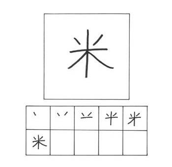
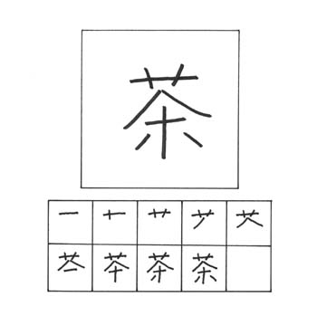
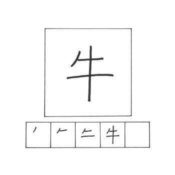

PELAJARAN 10
Pada materi dibawah ini, merupakan materi kanji yang berkaitan dengan makanan.

KOME / こめ
goresan : 6
arti : beras
kunyomi : kome
onyomi : bei, mai
kotoba :
南米 nanbei /
amerika selatan
米国 beikoku /
amerika
米粒 kometsubu /
biji padi
玄米 genmai / padi

CHA / ちゃ
goresan : 9
arti : teh
kunyomi : -
onyomi : cha, sa
kotoba :
茶色 chairo /
warna coklat
紅茶 koucha /
teh hitam
緑茶 ryokucha /
teh hijau
喫茶店 kissaten /
kedai kopi

USHI / うし
goresan : 4
arti : sapi
kunyomi : ushi
onyomi : gyuu
kotoba :
牛乳 gyuunyuu /
susu sapi
牛肉 gyuuniku /
daging sapi
牡牛座 oushiza /
taurus

NIKU / にく
goresan : 6
arti : daging
kunyomi : -
onyomi : niku
kotoba :
牛肉 gyuuniku /
daging sapi
肉親 naishin /
hubungan darah
筋肉 kinniku / otot
肉屋 nikuya /
toko daging